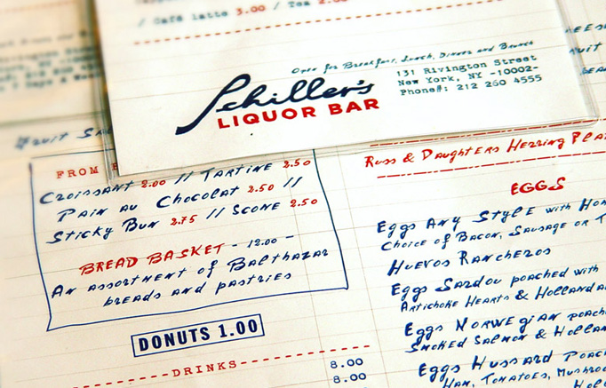
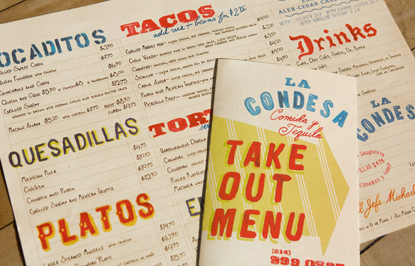
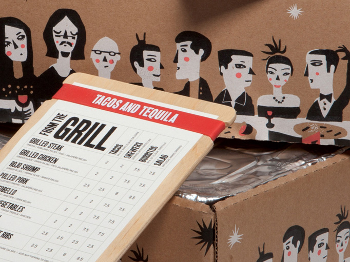

Art of the Menu
UnderConsideration just launched yet another division with Art of the Menu to feature menu design from around the world. This one is worth bookmarking along with Brand New, FPO and Quipsologies.
Going past the aesthetics, the best menu design is actually a science in guiding the patron into purchasing the stars (popular money makers) and away from the plowhorses (popular, but expensive for the restaurant). Read The Science of Menu Design posted here a year ago.